Актори та діячі кіно
Анджеліна Джолі
Американська акторка підтримує нашу країну з 2014 року. Але після початку повномасштабної війни її приїзд до Львова став для українських фанів справжнім приємним шоком. Вона прибула туди як посол доброї волі ООН, і у своїх соцмережах неодноразово закликала світ не залишатися осторонь чужої біди.
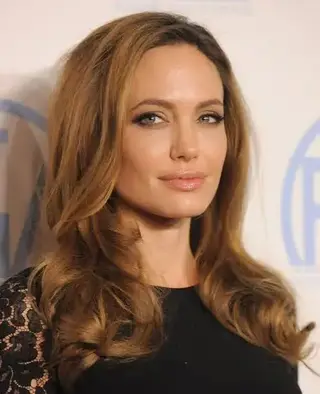
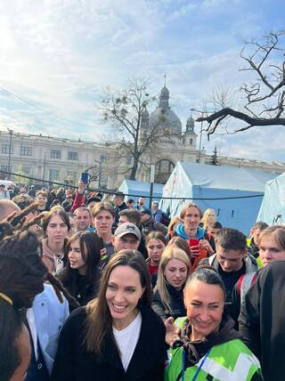
Лієв Шрайбер
Зірка "Людей X" активно підтримує нашу країну з самого початку повномасштабного вторгнення РФ. Він - амбасадор United24, і чимало його публікацій в Instagram присвячені Україні. У квітні 2022 року знаменитість допомагав готувати борщ на польсько-українському кордоні, а в серпні того ж року приїхав до Києва та особисто поспілкувався з Володимиром Зеленським.
Кетрін Винник
Канадська акторка не лише підтримала нашу країну, але й приїхала до Києва, сфотографувалась на тлі ворожої техніки на Михайлівській площі разом з іншою акторкою українського походження - Іванною Сахно. Обидві - амбасадорки United24.
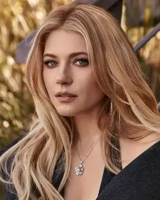
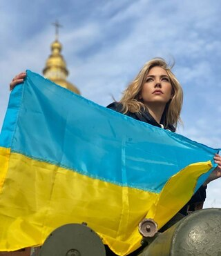
Тільда Свінтон
Британська акторка у свій спосіб підтримала нашу країну. Знаменитість пофарбувала волосся у жовтий колір і з новою зачіскою з’явилася на хіднику. Свій образ для завершеності вона доповнила блакитною сорочкою. Таким чином селебріті привернула увагу громадськості до війни в Україні, яку розпочала Росія.
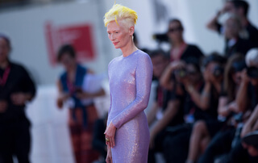
Сара Джессіка Паркер
Продюсерка, акторка і модель неодноразово демонструвала, що вона на боці України. Знаменитість підтримувала нашу країну матеріально, переказавши гроші UNICEF, "Лікарям без кордонів" та Sunflower of Peace. Також вона - продюсерка документальної стрічки про групу українських танцюристів в еміграції, які створили нову балетну трупу United Ukrainian Ballet.
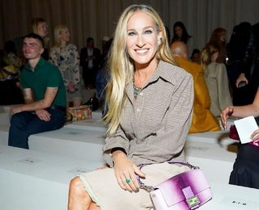
Джек Глісон
Зірка "Гри престолів" відвідував нашу країну з важливою місією - передати пікап від британських волонтерів українським військовим. Він мав кілька зустрічей у Києві та навіть виставив на продаж ляльку свого персонажа із серіалу в рамках благодійного аукціону.
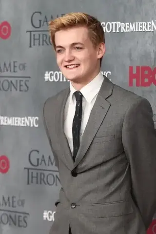
Бен Стіллер
Голлівудський актор та посол доброї волі ООН у 2022 році також побував в Україні. Бен зустрівся з Володимиром Зеленським, відвідав Ірпінь і Макарів, а також поспілкувався з українцями. Зірка на власні очі побачив страшні наслідки російської агресії на українській землі.
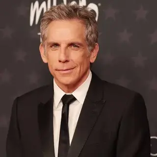
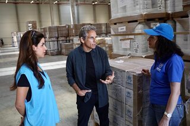
Міла Куніс та Ештон Кутчер
Оскільки Міла має українське походження, то вона не залишилася осторонь та разом зі своїм чоловіком долучилася до допомоги. Знаменитості зібрали мільйони доларів та залучили понад 65 тисяч осіб у всьому світі. У 2022 році пара подарувала 20 тисяч бронежилетів для української армії.
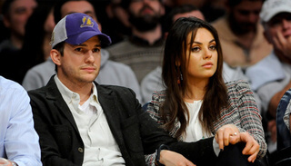
Бенедикт Камбербетч
Британський актор одним із перших заявив про свою підтримку України. В березні 2022 року під час міжнародного кінофестивалю в Санта-Барбарі він вийшов на сцену із синьо-жовтим прапором у руках. А під час спілкування з журналістами з'явився у смокінгу з прикріпленою до піджака жовто-блакитною стрічкою. Камбербетч закликав світ допомагати українцям та робити все можливе для їхньої перемоги над ворогом.
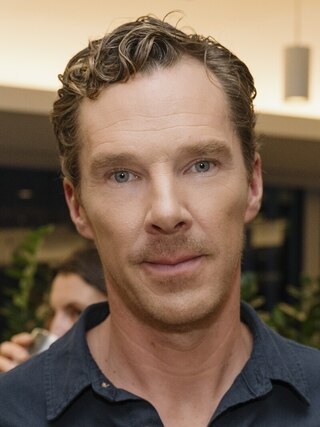
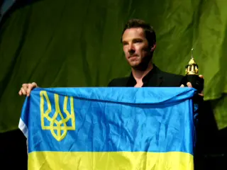
Шон Пенн
Американський кінорежисер активно підтримує Україну від початку повномасштабної війни. Він закликав уряд США закрити небо над Україною та діяти рішуче.
Також Пенн виступав за надання зброї українській армії та понад п’ять разів відвідував країну у період війни. Він створив благодійну організацію Core, яка допомагає українським біженцям не лише за кордоном, а й в українських містах. Окрім того, режисер зняв документальний фільм про нашу країну.
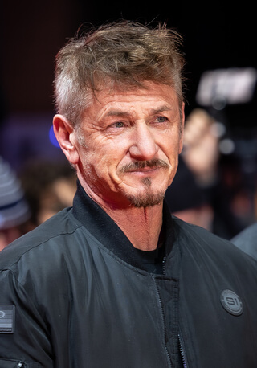
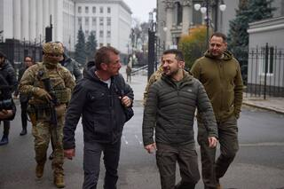
Джессіка Честейн
Голлівудська акторка приїжджала до Києва, щоб висловити підтримку Україні та поспілкуватися з українцями. Вона відвідала дитячі лікарні, побувала в Офісі Президента та закликала долучатися до зборів коштів на допомогу постраждалим. У соцмережах зірка також опублікувала фото на тлі українського потяга.
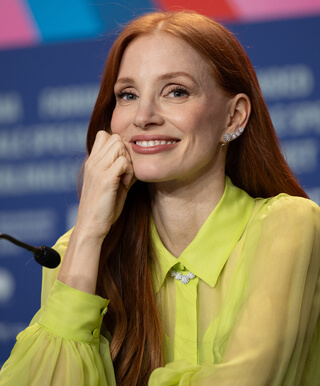
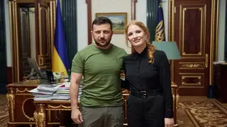
Джеймі Лі Кертіс
Акторка, письменниця та громадська діячка засудила дії Путіна проти України. Вона використовує свої соцмережі для висвітлення війни, допомагає лікарням і закликає молитися за постраждалих дітей та їхніх батьків.
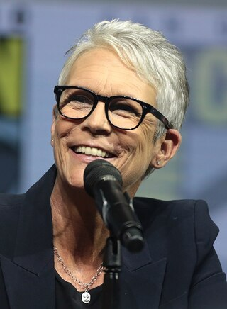
Алісса Мілано
Зірка серіалу "Усі жінки - відьми" розповіла світу про обстріл росіянами національної дитячої лікарні "Охматдит", опублікувавши в соцмережах скріншот новини та фото наслідків удару. На момент влучання в лікарні, як відомо, перебували лікарі та діти.
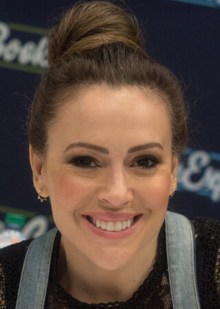
Катрін Денев
Французька акторка, продюсерка та модель також підтримала Україну. У 2022 році вона з'явилася на червоній доріжці Венеційського кінофестивалю з нашивкою у вигляді синьо-жовтого прапора на сорочці. Зірка зазначила, що "її розум і душа - з Україною". А у 2024 році разом із командою United24 Денев записала відеозвернення з нагоди другої річниці повномасштабного вторгнення Росії.
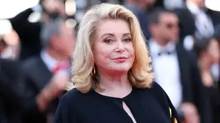
Співаки та музичні гурти
Барбра Стрейзанд
Виконавиця та акторка - у числі знаменитостей, хто висловив підтримку українському народові після початку повномасштабної війни. Від платформи United24 вона отримала вишиванку з унікальним орнаментом, та у соцмережах раніше хвалилася подарунком, а також закликала світ долучитися до збору на реконструкцію Бузівської школи, яка розташована на Київщині.
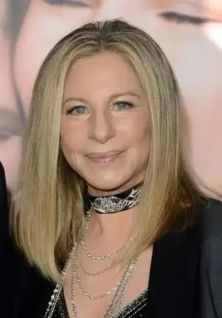
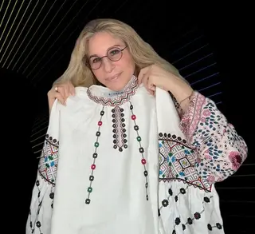
Мадонна
Артистка обирає аксесуари від українського дизайнера Руслана Багінського, проте тільки на цьому її підтримка нашої країни не закінчується. На одному зі своїх концертів зірка світового масштабу розгорнула український прапор, а також вона долучалася до допомоги фонду "Голоси дітей".
У червні минулого року селебріті підтримала Глобальний саміт миру у Швейцарії, який ініціювала Україна. У Instagram співачка оприлюднила кадри російсько-української війни та нагадала про викрадених Росією дітей.
Крім того, зірка розкритикувала Трампа.
Стінг
Британський музикант на одному зі своїх концертів у Польщі висловив слова підтримки українцям. А для того, щоб усі присутні точно його зрозуміли, співак запросив на сцену актора Мацея Штура, аби той переклав його промову польською мовою.
Також музикант заспівав "Shape of my Heart" під супровід бандури, на якій грав український військовий Тарас Столяр.
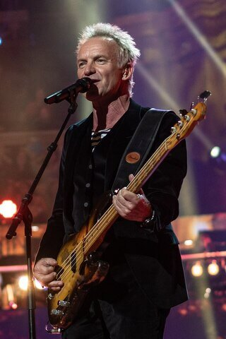
Ед Ширан
Британський виконавець разом з українським гуртом "Антитіла" випустив спільну пісню на тему війни. Пізніше Тополя розповідав, що його закордонного колегу турбує все, що відбувається в нашій країні.
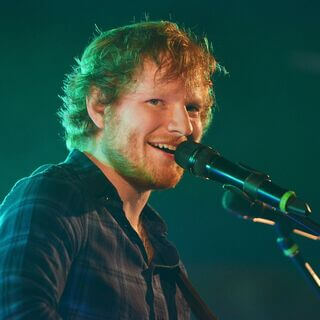
А у квітні 2022 року Ширан презентував кліп, який був знятий у Києві до повномасштабної війни.
Ден Рейнольдс
Лідер гурту Imagine Dragons на своїх концертах розгортає український прапор і висловлює слова підтримки українцям. Музичний гурт є амбасадором United24, а в травні 2023 року колектив презентував пісню та кліп, знятий у зруйнованому українському селі на Миколаївщині. Головним героєм відео став 14-річний Сашко.
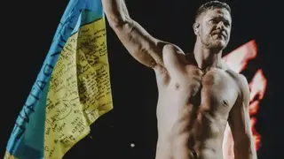
Pink Floyd
Легендарний британський рок-гурт підтримав Україну музичною прем’єрою. Вперше за 28 років колектив випустив пісню, у приспіві якої звучить вокал лідера "Бумбоксу" Андрія Хливнюка. Композиція "Ой у лузі червона калина" пролунала на весь світ, а сам гурт таким чином висловив свою проукраїнську позицію.
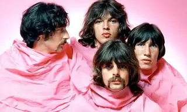
Інші медіа-діячі
Кейт Міддлтон
Представниця королівської родини, як і інші її родичі, теж підтримує нашу країну у період війни. Дружина принца Вільяма навіть з'явилася у кліпі гурту Kalush Orchestra для "Євробачення 2023", який показали на відкритті гранд-фіналу масштабного пісенного заходу.
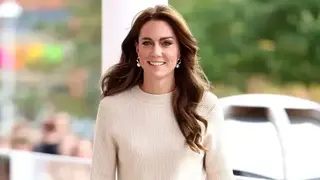
Стівен Кінг
Американський письменник - також у списку тих, хто разом з Україною у війні проти Росії. З першого дня він висловив нам свою підтримку і продовжує це робити й досі. В соцмережах знаменитість закликає РФ припинити агресію та вбивства мирного населення України. Також він з'являвся у футболці з написом "I Stand with Ukraine".
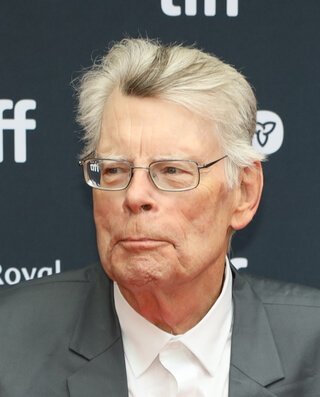
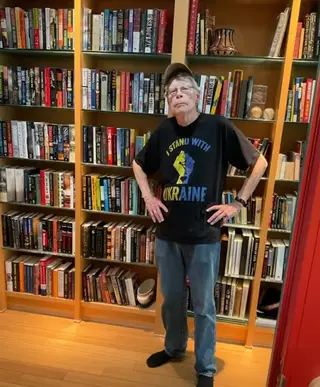
Тімоті Снайдер
Це американський історик і письменник, амбасадор United24, і він активно підтримує Україну у війні з Росією, часто пишучи про російську агресію в соцмережах. У 2023 році Снайдер займався збором коштів на систему для виявлення дронів і ракет. Вперше про свою проукраїнську позицію він заявив ще у 2014 році.
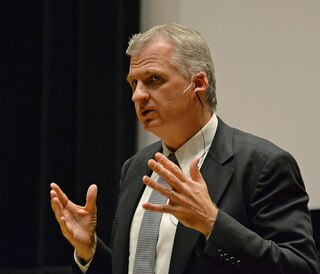